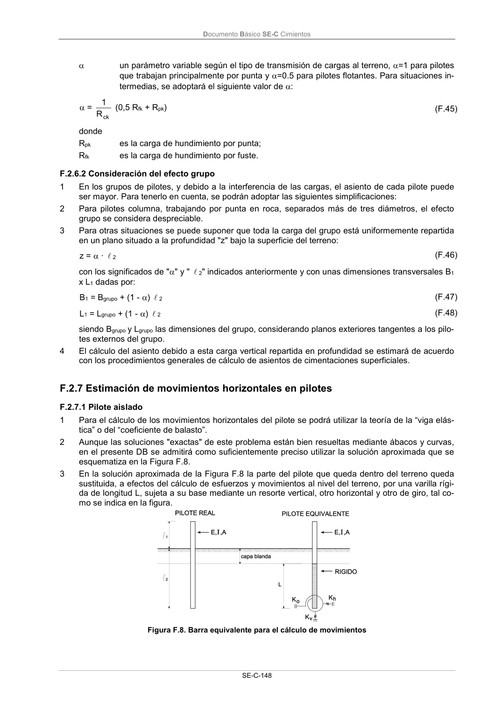

DB-SE-C · Página 153 · versión 2019-12-20
SHA256: a71133f4b0dca253e45ea3071c70f2a512354bcc5cd841bf89b1a502f567ac5e · página física 153 de 165 · métodos de encabezado
solo si están cotejados.
Documento · ← p. 152 · p. 154 →
Formatos: Markdown · JSON de bloques · PDF p. 153 · imagen PNG
Documento Básico SE-C Cimientos SE-C-148 un parámetro variable según el tipo de transmisión de cargas al terreno, =1 para pilotes que trabajan principalmente por punta y =0.5 para pilotes flotantes. Para situaciones in- termedias, se adoptará el siguiente valor de : = ck R 1 (0,5 Rfk + Rpk) (F.45) donde Rpk es la carga de hundimiento por punta; Rfk es la carga de hundimiento por fuste. F.2.6.2 Consideración del efecto grupo 1 En los grupos de pilotes, y debido a la interferencia de las cargas, el asiento de cada pilote puede ser mayor. Para tenerlo en cuenta, se podrán adoptar las siguientes simplificaciones: 2 Para pilotes columna, trabajando por punta en roca, separados más de tres diámetros, el efecto grupo se considera despreciable. 3 Para otras situaciones se puede suponer que toda la carga del grupo está uniformemente repartida en un plano situado a la profundidad "z" bajo la superficie del terreno: z = · l 2 (F.46) con los significados de "" y " l 2" indicados anteriormente y con unas dimensiones transversales B1 x L1 dadas por: B1 = Bgrupo + (1 - ) l 2 (F.47) L1 = Lgrupo + (1 - ) l 2 (F.48) siendo Bgrupo y Lgrupo las dimensiones del grupo, considerando planos exteriores tangentes a los pilo- tes externos del grupo. 4 El cálculo del asiento debido a esta carga vertical repartida en profundidad se estimará de acuerdo con los procedimientos generales de cálculo de asientos de cimentaciones superficiales. F.2.7 Estimación de movimientos horizontales en pilotes F.2.7.1 Pilote aislado 1 Para el cálculo de los movimientos horizontales del pilote se podrá utilizar la teoría de la “viga elás- tica” o del “coeficiente de balasto”. 2 Aunque las soluciones "exactas" de este problema están bien resueltas mediante ábacos y curvas, en el presente DB se admitirá como suficientemente preciso utilizar la solución aproximada que se esquematiza en la Figura F.8. 3 En la solución aproximada de la Figura F.8 la parte del pilote que queda dentro del terreno queda sustituida, a efectos del cálculo de esfuerzos y movimientos al nivel del terreno, por una varilla rígi- da de longitud L, sujeta a su base mediante un resorte vertical, otro horizontal y otro de giro, tal co- mo se indica en la figura. Figura F.8. Barra equivalente para el cálculo de movimientos
